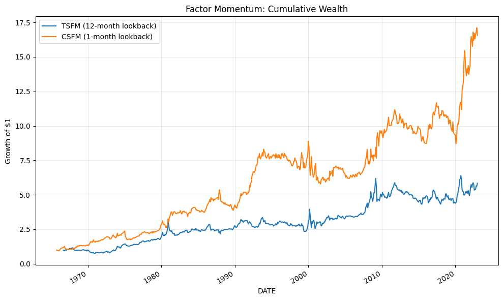
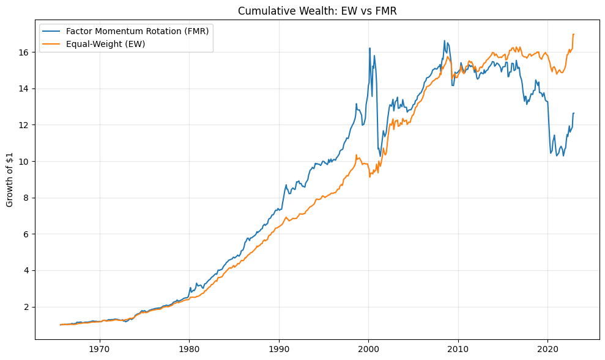
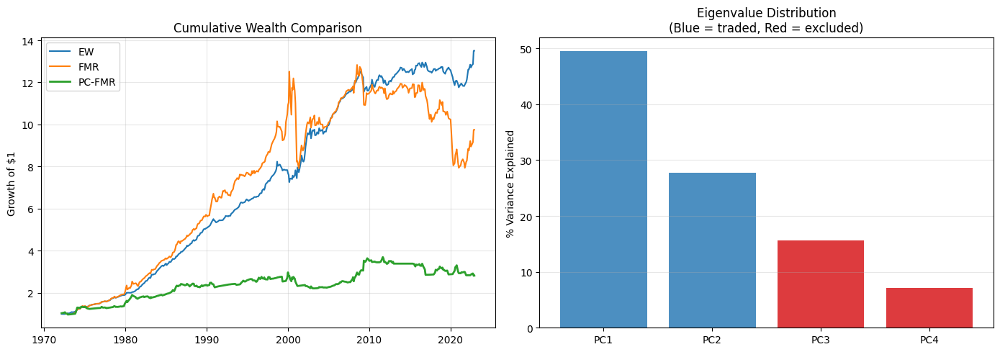

×
Replicating and extending Ehsani & Linnainmaa (2022) and Arnott, Kalesnik & Linnainmaa (2023). Do equity risk factors exhibit momentum — and is stock-level momentum simply a reflection of this factor-level autocorrelation?
Each factor is constructed using the standard Fama-French 2×3 sort methodology. Every month, stocks are independently sorted into two size groups (NYSE median) and three signal groups (NYSE 30th/70th percentiles), producing six value-weighted portfolios. The factor return averages the long-short spread across both size groups.
HML, PMU, and CMA rebalance annually in June (holding July–June). UMD rebalances monthly — momentum is a short-horizon signal that requires frequent refreshing.
| Factor | Mean Monthly | Ann. Mean | Ann. Std | Ann. Sharpe | t-stat |
|---|---|---|---|---|---|
| HML | 0.0024 | 0.0294 | 0.1108 | 0.2652 | 2.01 |
| PMU | 0.0015 | 0.0183 | 0.0744 | 0.2463 | 1.87 |
| CMA | 0.0016 | 0.0188 | 0.0641 | 0.2940 | 2.23 |
| UMD | 0.0041 | 0.0491 | 0.1402 | 0.3503 | 2.65 |
Benchmark correlations: HML correlates 0.91 with Fama-French HML. UMD correlates 0.97 with Fama-French UMD — confirming accurate factor replication from raw data.
The central empirical claim: factors that performed well over the prior year tend to continue performing well. Each factor is regressed on an indicator for whether its trailing 12-month average return was positive. A positive, significant beta implies the factor exhibits "streaks."
| Factor | Alpha | t(Alpha) | Beta | t(Beta) |
|---|---|---|---|---|
| HML | -0.0022 | -1.21 | 0.0081 | 3.33 |
| PMU | -0.0009 | -0.65 | 0.0038 | 2.25 |
| CMA | 0.0001 | 0.10 | 0.0026 | 1.80 |
| UMD | 0.0047 | 1.71 | -0.0009 | -0.26 |
HML shows the strongest autocorrelation (t = 3.33) — the most likely to continue performing well after a positive year. PMU is also significant (t = 2.25). This is exactly what the papers predict.
| Factor | ρ (Unconditional) | ρ+ (After Good Year) | ρ− (After Bad Year) |
|---|---|---|---|
| HML | -0.4246 | -0.1201 | -0.6912 |
| PMU | -0.0282 | 0.2660 | -0.4207 |
| CMA | 0.0016 | 0.2698 | -0.2467 |
Unconditional correlations between UMD and other factors are near zero — which is why the Fama-French model treats them as independent. But conditionally, the correlations flip sign: after a good year, momentum goes long value stocks; after a bad year, momentum goes short value. The unconditional correlation masks a strong time-varying relationship, explaining why the FF five-factor model struggles with momentum.
Two strategies that explicitly exploit factor-level autocorrelation: TSFM goes long factors with positive prior-12-month returns and shorts those with negative returns. CSFM goes long the top-2 factors by prior-month return and shorts the bottom-2.
| Metric | TSFM | CSFM |
|---|---|---|
| Ann. mean return | 0.0399 | 0.0569 |
| Ann. std | 0.1312 | 0.1253 |
| Sharpe ratio | 0.30 | 0.45 |
| Sortino ratio | 0.46 | 0.72 |
| Max drawdown | -0.3638 | -0.3484 |
| Calmar ratio | 0.11 | 0.16 |
| t-statistic | 2.28 | 3.44 |

CSFM outperforms TSFM across all metrics (Sharpe 0.45 vs 0.30). CSFM uses a 1-month lookback capturing shorter-term factor persistence, while TSFM's 12-month window mirrors how UMD is constructed.
A factor momentum strategy is only a genuine anomaly if its returns cannot be explained by known risk factors. Each strategy is regressed on the Fama-French five-factor model, then the six-factor model (adding UMD).
| Term | 5-Factor | 6-Factor |
|---|---|---|
| Alpha | 0.0058 (t=3.33) | 0.0018 (t=1.25) |
| Mkt-RF | -0.093 (t=-2.32) | 0.013 (t=0.37) |
| SMB | 0.072 (t=1.25) | 0.061 (t=1.30) |
| HML | -0.389 (t=-4.88) | -0.051 (t=-0.74) |
| RMW | -0.287 (t=-3.74) | -0.342 (t=-5.48) |
| CMA | 0.165 (t=1.38) | -0.073 (t=-0.74) |
| UMD | — | 0.512 (t=15.59) |
| R² | 0.119 | 0.421 |
TSFM has a significant five-factor alpha (0.58%/mo, t = 3.33), but it drops to insignificance when UMD is added (0.18%, t = 1.25) with a massive UMD loading of 0.51. TSFM's 12-month lookback mirrors how UMD is constructed.
| Term | 5-Factor | 6-Factor |
|---|---|---|
| Alpha | 0.0034 (t=1.93) | 0.0031 (t=1.74) |
| Mkt-RF | -0.033 (t=-0.81) | -0.026 (t=-0.62) |
| SMB | -0.108 (t=-1.84) | -0.108 (t=-1.86) |
| HML | -0.126 (t=-1.56) | -0.102 (t=-1.20) |
| RMW | 0.131 (t=1.68) | 0.127 (t=1.63) |
| CMA | 0.384 (t=3.16) | 0.367 (t=2.98) |
| UMD | — | 0.036 (t=0.88) |
| R² | 0.057 | 0.058 |
CSFM's alpha barely changes when UMD is added (0.34% → 0.31%) with a tiny, insignificant UMD loading (0.04, t = 0.88). CSFM captures a short-term effect that stock momentum doesn't explain at all.
This supports the papers' central argument: factor momentum is more fundamental than stock momentum. UMD explains TSFM because they share a similar lookback, but CSFM — which captures pure factor-level relative momentum — is completely independent of UMD.
The strategies above take both long and short positions in factors. In practice, many investors cannot short factors. This section builds a more realistic long-only Factor Momentum Rotation (FMR) strategy and compares it against a passive equal-weight benchmark.
| Metric | Equal-Weight | FMR |
|---|---|---|
| Ann. excess return | 0.0275 | 0.0236 |
| Ann. std | 0.0464 | 0.0939 |
| Sharpe ratio | 0.59 | 0.25 |
| Sortino ratio | 0.92 | 0.33 |
| Max drawdown | -0.1184 | -0.3815 |
| Calmar ratio | 0.23 | 0.06 |
| t-statistic | 3.75 | 1.59 |

The simple equal-weight benchmark outperforms FMR on every metric. With only four factors, the momentum signal is too unstable for reliable long-only timing — one factor having a bad run can dominate the portfolio. The papers analyze 20–47 factors where the signal is much more diversified.
Ehsani & Linnainmaa and Arnott et al. show that factor momentum concentrates in the highest-eigenvalue principal components — the systematic directions that explain the most variation in returns. The economic intuition: arbitrageurs can easily correct mispricings in low-eigenvalue directions, so only sentiment-driven mispricings in the most systematic factor combinations persist long enough to generate momentum.
| Component | Avg. Eigenvalue | % Variance | Status |
|---|---|---|---|
| PC1 | 1.979 | 49.5% | Traded |
| PC2 | 1.110 | 27.8% | Traded |
| PC3 | 0.624 | 15.6% | Excluded |
| PC4 | 0.286 | 7.2% | Excluded |
| Group | Sharpe | t-stat |
|---|---|---|
| High-EV (PC1–2) | 0.291 | 2.08 |
| Low-EV (PC3–4) | 0.213 | 1.53 |
| All PCs (PC1–4) | 0.439 | 3.14 |

PC1 and PC2 capture 77.2% of variance and show significant momentum (Sharpe 0.29, t = 2.08), while PC3 and PC4 do not. The long-only PC-FMR underperforms because PCs are centered at zero by construction — the "was this PC positive?" signal is inherently noisier than asking the same question of a raw factor with a positive long-run mean.
The overarching takeaway aligns with Ehsani & Linnainmaa: momentum is not a separate anomaly — it is what happens when you sort stocks by past returns and inadvertently load on whichever factors are currently in a streak.